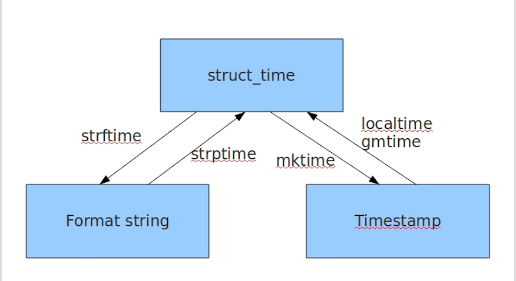
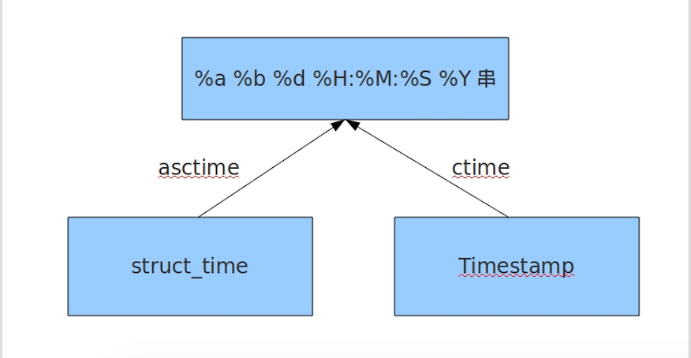
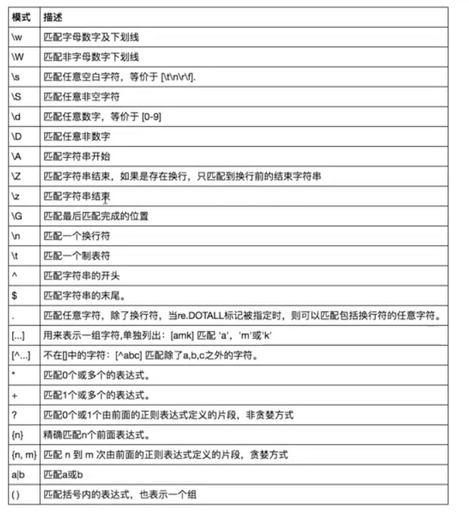

原文连接:https://www.cnblogs.com/lsf123456/p/11181384.html
一、time&datatime
在Python中，通常有这几种方式来表示时间：
- 时间戳(timestamp) ：通常来说，时间戳表示的是从1970年1月1日00:00:00开始按秒计算的偏移量。我们运行“type(time.time())”，返回的是float类型。
- 格式化的时间字符串
- 元组(struct_time) ：struct_time元组共有9个元素共九个元素:(年，月，日，时，分，秒，一年中第几周，一年中第几天，夏令时)
1. time模块
import time
# 1 time() :返回当前时间的时间戳
time.time() #1473525444.037215
#----------------------------------------------------------
# 2 localtime([secs])
# 将一个时间戳转换为当前时区的struct_time。secs参数未提供，则以当前时间为准。
time.localtime() #time.struct_time(tm_year=2016, tm_mon=9, tm_mday=11, tm_hour=0,
# tm_min=38, tm_sec=39, tm_wday=6, tm_yday=255, tm_isdst=0)
time.localtime(1473525444.037215)
#----------------------------------------------------------
# 3 gmtime([secs]) 和localtime()方法类似，gmtime()方法是将一个时间戳转换为UTC时区（0时区）的struct_time。
#----------------------------------------------------------
# 4 mktime(t) : 将一个struct_time转化为时间戳。
print(time.mktime(time.localtime()))#1473525749.0
#----------------------------------------------------------
# 5 asctime([t]) : 把一个表示时间的元组或者struct_time表示为这种形式：'Sun Jun 20 23:21:05 1993'。
# 如果没有参数，将会将time.localtime()作为参数传入。
print(time.asctime())#Sun Sep 11 00:43:43 2016
#----------------------------------------------------------
# 6 ctime([secs]) : 把一个时间戳（按秒计算的浮点数）转化为time.asctime()的形式。如果参数未给或者为
# None的时候，将会默认time.time()为参数。它的作用相当于time.asctime(time.localtime(secs))。
print(time.ctime()) # Sun Sep 11 00:46:38 2016
print(time.ctime(time.time())) # Sun Sep 11 00:46:38 2016
# 7 strftime(format[, t]) : 把一个代表时间的元组或者struct_time（如由time.localtime()和
# time.gmtime()返回）转化为格式化的时间字符串。如果t未指定，将传入time.localtime()。如果元组中任何一个
# 元素越界，ValueError的错误将会被抛出。
print(time.strftime("%Y-%m-%d %X", time.localtime()))#2016-09-11 00:49:56
# 8 time.strptime(string[, format])
# 把一个格式化时间字符串转化为struct_time。实际上它和strftime()是逆操作。
print(time.strptime('2011-05-05 16:37:06', '%Y-%m-%d %X'))
#time.struct_time(tm_year=2011, tm_mon=5, tm_mday=5, tm_hour=16, tm_min=37, tm_sec=6,
# tm_wday=3, tm_yday=125, tm_isdst=-1)
#在这个函数中，format默认为："%a %b %d %H:%M:%S %Y"。
# 9 sleep(secs)
# 线程推迟指定的时间运行，单位为秒。
# 10 clock()
# 这个需要注意，在不同的系统上含义不同。在UNIX系统上，它返回的是“进程时间”，它是用秒表示的浮点数（时间戳）。
# 而在WINDOWS中，第一次调用，返回的是进程运行的实际时间。而第二次之后的调用是自第一次调用以后到现在的运行
# 时间，即两次时间差。


2. datetime模块
#时间加减
import datetime
# print(datetime.datetime.now()) #返回 2016-08-19 12:47:03.941925
#print(datetime.date.fromtimestamp(time.time()) ) # 时间戳直接转成日期格式 2016-08-19
# print(datetime.datetime.now() )
# print(datetime.datetime.now() + datetime.timedelta(3)) #当前时间+3天
# print(datetime.datetime.now() + datetime.timedelta(-3)) #当前时间-3天
# print(datetime.datetime.now() + datetime.timedelta(hours=3)) #当前时间+3小时
# print(datetime.datetime.now() + datetime.timedelta(minutes=30)) #当前时间+30分
#
# c_time = datetime.datetime.now()
# print(c_time.replace(minute=3,hour=2)) #时间替换
datetime模块
二、random模块
import random
print(random.random())#(0,1)----float
print(random.randint(1,3)) #[1,3]
print(random.randrange(1,3)) #[1,3)
print(random.choice([1,'23',[4,5]]))#23
print(random.sample([1,'23',[4,5]],2))#[[4, 5], '23']
print(random.uniform(1,3))#1.927109612082716
item=[1,3,5,7,9]
random.shuffle(item)
print(item)
三、os模块
os.getcwd() 获取当前工作目录，即当前python脚本工作的目录路径
os.chdir("dirname") 改变当前脚本工作目录；相当于shell下cd
os.curdir 返回当前目录: ('.')
os.pardir 获取当前目录的父目录字符串名：('..')
os.makedirs('dirname1/dirname2') 可生成多层递归目录
os.removedirs('dirname1') 若目录为空，则删除，并递归到上一级目录，如若也为空，则删除，依此类推
os.mkdir('dirname') 生成单级目录；相当于shell中mkdir dirname
os.rmdir('dirname') 删除单级空目录，若目录不为空则无法删除，报错；相当于shell中rmdir dirname
os.listdir('dirname') 列出指定目录下的所有文件和子目录，包括隐藏文件，并以列表方式打印
os.remove() 删除一个文件
os.rename("oldname","newname") 重命名文件/目录
os.stat('path/filename') 获取文件/目录信息
os.sep 输出操作系统特定的路径分隔符，win下为"\\",Linux下为"/"
os.linesep 输出当前平台使用的行终止符，win下为"\r\n",Linux下为"\n"
os.pathsep 输出用于分割文件路径的字符串 win下为;,Linux下为:
os.name 输出字符串指示当前使用平台。win->'nt'; Linux->'posix'
os.system("bash command") 运行shell命令，直接显示
os.environ 获取系统环境变量
os.path.abspath(path) 返回path规范化的绝对路径
os.path.split(path) 将path分割成目录和文件名二元组返回
os.path.dirname(path) 返回path的目录。其实就是os.path.split(path)的第一个元素
os.path.basename(path) 返回path最后的文件名。如何path以／或\结尾，那么就会返回空值。即os.path.split(path)的第二个元素
os.path.exists(path) 如果path存在，返回True；如果path不存在，返回False
os.path.isabs(path) 如果path是绝对路径，返回True
os.path.isfile(path) 如果path是一个存在的文件，返回True。否则返回False
os.path.isdir(path) 如果path是一个存在的目录，则返回True。否则返回False
os.path.join(path1[, path2[, ...]]) 将多个路径组合后返回，第一个绝对路径之前的参数将被忽略
os.path.getatime(path) 返回path所指向的文件或者目录的最后存取时间
os.path.getmtime(path) 返回path所指向的文件或者目录的最后修改时间
os路径处理
#方式一：推荐使用
import os
#具体应用
import os,sys
possible_topdir = os.path.normpath(os.path.join(
os.path.abspath(__file__),
os.pardir, #上一级
os.pardir,
os.pardir
))
sys.path.insert(0,possible_topdir)
#方式二：不推荐使用
os.path.dirname(os.path.dirname(os.path.dirname(os.path.abspath(__file__))))
四、sys模块
sys.argv 命令行参数List，第一个元素是程序本身路径
sys.exit(n) 退出程序，正常退出时exit(0)
sys.version 获取Python解释程序的版本信息
sys.maxint 最大的Int值
sys.path 返回模块的搜索路径，初始化时使用PYTHONPATH环境变量的值
sys.platform 返回操作系统平台名称
# 进度条
import sys,time
for i in range(10):
sys.stdout.write('#')
time.sleep(1)
sys.stdout.flush()
五、json&pickle
用eval内置方法可以将一个字符串转成python对象，不过，eval方法是有局限性的，对于普通的数据类型，json.loads和eval都能用，但遇到特殊类型的时候，eval就不管用了,所以eval的重点还是通常用来执行一个字符串表达式，并返回表达式的值。
import json
x="[null,true,false,1]"
print(eval(x)) #报错，无法解析null类型，而json就可以
print(json.loads(x))
1. 什么是序列化？
我们把对象(变量)从内存中变成可存储或传输的过程称之为序列化，在Python中叫pickling，在其他语言中也被称之为serialization，marshalling，flattening等等，都是一个意思。
序列化之后，就可以把序列化后的内容写入磁盘，或者通过网络传输到别的机器上。
反过来，把变量内容从序列化的对象重新读到内存里称之为反序列化，即unpickling。
2. json模块
如果我们要在不同的编程语言之间传递对象，就必须把对象序列化为标准格式，比如XML，但更好的方法是序列化为JSON，因为JSON表示出来就是一个字符串，可以被所有语言读取，也可以方便地存储到磁盘或者通过网络传输。JSON不仅是标准格式，并且比XML更快，而且可以直接在Web页面中读取，非常方便。
JSON表示的对象就是标准的JavaScript语言的对象，JSON和Python内置的数据类型对应如下：

#----------------------------序列化
import json
dic={'name':'alvin','age':23,'sex':'male'}
print(type(dic))#<class 'dict'>
j=json.dumps(dic)
print(type(j))#<class 'str'>
f=open('序列化对象','w')
f.write(j) # 等价于json.dump(dic,f)
f.close()
#-----------------------------反序列化
import json
f=open('序列化对象')
data=json.loads(f.read())# 等价于data=json.load(f)


import json
#dct="{'1':111}"#json 不认单引号
#dct=str({"1":111})#报错,因为生成的数据还是单引号:{'one': 1}
dct='{"1":"111"}'
print(json.loads(dct))
#conclusion:
# 无论数据是怎样创建的，只要满足json格式，就可以json.loads出来,不一定非要dumps的数据才能loads3. pickle模块
pickle模块的用法与json相同，但转化的不是字符串类型，而是bytes类型。
Pickle的问题和所有其他编程语言特有的序列化问题一样，就是它只能用于Python，并且可能不同版本的Python彼此都不兼容，因此，只能用Pickle保存那些不重要的数据，不能成功地反序列化也没关系。
import pickle
dic = {'name': 'alvin', 'age': 23, 'sex': 'male'}
print(type(dic)) # <class 'dict'>
j = pickle.dumps(dic)
print(type(j)) # <class 'bytes'>
f = open('序列化对象_pickle', 'wb') # 注意是w是写入str,wb是写入bytes,j是'bytes'
f.write(j) # 等价于pickle.dump(dic,f)
f.close()
# -------------------------反序列化
f = open('序列化对象_pickle', 'rb')
data = pickle.loads(f.read()) # 等价于data=pickle.load(f)
print(data['age'])
六、shelve模块
shelve模块比pickle模块简单，只有一个open函数，返回类似字典的对象，可读可写;key必须为字符串，而值可以是python所支持的数据类型
import shelve
f = shelve.open(r'shelve.txt') # 将一个字典放入文本 f = {}
f['stu1'] = 'Tom'
f['stu2'] = {'name': 'gangdan', 'age': 53}
f['school_info'] = {'website': 'http://www.pypy.org', 'city': 'beijing'}
print(f['stu1'])
print(f['stu2']['name'])
f.close()
七、xml模块
xml是实现不同语言或程序之间进行数据交换的协议，跟json差不多，但json使用起来更简单，不过，古时候，在json还没诞生的黑暗年代，大家只能选择用xml，至今很多传统公司如金融行业的很多系统的接口还主要是xml。
1 import xml.etree.ElementTree as ET
2
3 tree = ET.parse("xml")
4 root = tree.getroot()
5
6 # xml遍历
7 for i in root:
8 # print(i.tag)
9 # print(i.attrib)
10 for j in i:
11 print(j.tag) # 标签
12 print(j.attrib) # 属性
13 print(j.text) # 文本
14
15 # 只遍历year节点
16 for node in root.iter('year'):
17 print(node.tag, node.text)
18 # year 2008
19 # year 2011
20 # year 2011
21
22 # 修改
23 for node in root.iter('year'):
24 # 修改文本
25 new_year = int(node.text) + 1
26 node.text = str(new_year)
27 # 修改属性
28 node.set('updated', 'yes')
29 # 写入修改
30 tree.write('new.xml')
31
32 # 在country内添加（append）节点year2
33 for country in root.findall('country'):
34 for year in country.findall('year'):
35 if int(year.text) > 2000:
36 year2 = ET.Element('year2')
37 year2.text = '新年'
38 year2.attrib = {'update': 'yes'}
39 country.append(year2) # 往country节点下添加子节点
40
41 tree.write('a.xml.swap')
42
43 # 删除
44 for country in root.findall('country'):
45 rank = int(country.find('rank').text)
46 if rank > 50:
47 root.remove(country)
48 tree.write('new.xml') 1 # 创建xml文件
2 import xml.etree.ElementTree as ET
3
4 new_xml = ET.Element("namelist")
5 name = ET.SubElement(new_xml, "name", attrib={"enrolled": "yes"})
6 age = ET.SubElement(name, "age", attrib={"checked": "no"})
7 sex = ET.SubElement(name, "sex")
8 sex.text = '33'
9 name2 = ET.SubElement(new_xml, "name", attrib={"enrolled": "no"})
10 age = ET.SubElement(name2, "age")
11 age.text = '19'
12
13 et = ET.ElementTree(new_xml) # 生成文档对象
14 et.write("test.xml", encoding="utf-8", xml_declaration=True)
15
16 ET.dump(new_xml) # 打印生成的格式八、re模块
1. 什么是正则表达式
正则就是用一些具有特殊含义的符号组合到一起（称为正则表达式）来描述字符或者字符串的方法。或者说：正则就是用来描述一类事物的规则。（在Python中）它内嵌在Python中，并通过 re 模块实现。正则表达式模式被编译成一系列的字节码，然后由用 C 编写的匹配引擎执行。
2. 字符匹配
-
普通字符：大多数字符和字母都会和自身匹配
-
元字符：. ^ $ * + ? { } [ ] | ( ) \

import re
# \w与\W
print(re.findall('\w', 'hello egon 123')) # ['h', 'e', 'l', 'l', 'o', 'e', 'g', 'o', 'n', '1', '2', '3']
print(re.findall('\W', 'hello egon 123')) # [' ', ' ']
# \s与\S
print(re.findall('\s', 'hello egon 123')) # [' ', ' ', ' ', ' ']
print(re.findall('\S', 'hello egon 123')) # ['h', 'e', 'l', 'l', 'o', 'e', 'g', 'o', 'n', '1', '2', '3']
# \n \t都是空,都可以被\s匹配
print(re.findall('\s', 'hello \n egon \t 123')) # [' ', '\n', ' ', ' ', '\t', ' ']
# \n与\t
print(re.findall(r'\n', 'hello egon \n123')) # ['\n']
print(re.findall(r'\t', 'hello egon\t123')) # ['\n']
# \d与\D
print(re.findall('\d', 'hello egon 123')) # ['1', '2', '3']
print(re.findall('\D', 'hello egon 123')) # ['h', 'e', 'l', 'l', 'o', ' ', 'e', 'g', 'o', 'n', ' ']
# \A与\Z
print(re.findall('\Ahe', 'hello egon 123')) # ['he'],\A==>^
print(re.findall('123\Z', 'hello egon 123')) # ['he'],\Z==>$
# ^与$
print(re.findall('^h', 'hello egon 123')) # ['h']
print(re.findall('3$', 'hello egon 123')) # ['3']
# .
print(re.findall('a.b', 'a1b')) # ['a1b']
print(re.findall('a.b', 'a1b a*b a b aaab')) # ['a1b', 'a*b', 'a b', 'aab']
print(re.findall('a.b', 'a\nb')) # []
print(re.findall('a.b', 'a\nb', re.S)) # ['a\nb']
print(re.findall('a.b', 'a\nb', re.DOTALL)) # ['a\nb']同上一条意思一样
# 重复匹配：| * | ? | .* | .*? | + | {n,m} |
# *
print(re.findall('ab*', 'bbbbbbb')) # []
print(re.findall('ab*', 'a')) # ['a']
print(re.findall('ab*', 'abbbb')) # ['abbbb']
# ?
print(re.findall('ab?', 'a')) # ['a']
print(re.findall('ab?', 'abbb')) # ['ab']
# 匹配所有包含小数在内的数字
print(re.findall('\d+\.?\d*', "asdfasdf123as1.13dfa12adsf1asdf3")) # ['123', '1.13', '12', '1', '3']
# .*默认为贪婪匹配
print(re.findall('a.*b', 'a1b22222222b')) # ['a1b22222222b']
# .*?为非贪婪匹配：推荐使用
print(re.findall('a.*?b', 'a1b22222222b')) # ['a1b']
# +
print(re.findall('ab+', 'a')) # []
print(re.findall('ab+', 'abbb')) # ['abbb']
# {n,m}
print(re.findall('ab{2}', 'abbb')) # ['abb']
print(re.findall('ab{2,4}', 'abbb')) # ['abb']
print(re.findall('ab{1,}', 'abbb')) # 'ab{1,}' ===> 'ab+'
print(re.findall('ab{0,}', 'abbb')) # 'ab{0,}' ===> 'ab*'
#字符集[]
ret=re.findall('a[bc]d','acd')
print(ret)#['acd']
ret=re.findall('[a-z]','acd')
print(ret)#['a', 'c', 'd']
ret=re.findall('[.*+]','a.cd+')
print(ret)#['.', '+']
#在字符集里有功能的符号: - ^ \
ret=re.findall('[1-9]','45dha3')
print(ret)#['4', '5', '3']
ret=re.findall('[^ab]','45bdha3')
print(ret)#['4', '5', 'd', 'h', '3']
ret=re.findall('[\d]','45bdha3')
print(ret)#['4', '5', '3']
# \# print(re.findall('a\\c','a\c')) #对于正则来说a\\c确实可以匹配到a\c,但是在python解释器读取a\\c时，会发生转义，然后交给re去执行，所以抛出异常
print(re.findall(r'a\\c', 'a\c')) # r代表告诉解释器使用rawstring，即原生字符串，把我们正则内的所有符号都当普通字符处理，不要转义
print(re.findall('a\\\\c', 'a\c')) # 同上面的意思一样，和上面的结果一样都是['a\\c']
# ():分组
print(re.findall('ab+', 'ababab123')) # ['ab', 'ab', 'ab']
print(re.findall('(ab)+123', 'ababab123')) # ['ab']，匹配到末尾的ab123中的ab
print(re.findall('(?:ab)+123', 'ababab123')) # findall的结果不是匹配的全部内容，而是组内的内容,?:可以让结果为匹配的全部内容
print(re.findall('href="(.*?)"', '<a href="http://www.baidu.com">点击</a>')) # ['http://www.baidu.com']
print(re.findall('href="(?:.*?)"', '<a href="http://www.baidu.com">点击</a>')) # ['href="http://www.baidu.com"']
# |
print(re.findall('compan(?:y|ies)', 'Too many companies have gone bankrupt, and the next one is my company'))
import re
print(re.findall("<(?P<tag_name>\w+)>\w+</(?P=tag_name)>", "<h1>hello</h1>"))
print(re.search("<(?P<tag_name>\w+)>\w+</(?P=tag_name)>", "<h1>hello</h1>"))
print(re.search("<(?P<tag_name>\w+)>\w+</(?P=tag_name)>", "<h1>hello</h1>").group('tag_name'))
print(re.search(r"<(\w+)>\w+</\1>", "<h1>hello</h1>"))
# ['h1']
# <re.Match object; span=(0, 14), match='<h1>hello</h1>'>
# h1
# <re.Match object; span=(0, 14), match='<h1>hello</h1>'>
#匹配出所有的整数
import re
#ret=re.findall(r"\d+{0}]","1-2*(60+(-40.35/5)-(-4*3))")
ret=re.findall(r"-?\d+\.\d*|(-?\d+)","1-2*(60+(-40.35/5)-(-4*3))")
ret.remove("")
print(ret)
3. 常用方法
import re
#1
re.findall('a','alvin yuan') #返回所有满足匹配条件的结果,放在列表里
#2
re.search('a','alvin yuan').group() #函数会在字符串内查找模式匹配,只到找到第一个匹配然后返回一个包含匹配信息的对象,该对象可以
# 通过调用group()方法得到匹配的字符串,如果字符串没有匹配，则返回None。
#3
re.match('a','abc').group() #同search,不过尽在字符串开始处进行匹配
#4
ret=re.split('[ab]','abcd') #先按'a'分割得到''和'bcd',在对''和'bcd'分别按'b'分割
print(ret)#['', '', 'cd']
#5
ret=re.sub('\d','abc','alvin5yuan6',1)
print(ret)#alvinabcyuan6
ret=re.subn('\d','abc','alvin5yuan6')
print(ret)#('alvinabcyuanabc', 2)
#6
obj=re.compile('\d{3}')
ret=obj.search('abc123eeee')
print(ret.group())#123
1
2
3
4
5
6
import re
ret=re.finditer('\d','ds3sy4784a')
print(ret) #<callable_iterator object at 0x10195f940>
print(next(ret).group())
print(next(ret).group())
九、logging模块
1. 日志级别
CRITICAL = 50 #FATAL = CRITICAL
ERROR = 40
WARNING = 30 #WARN = WARNING
INFO = 20
DEBUG = 10
NOTSET = 0 #不设置
默认只会打印出warning以上级别的信息
2. 基础配置
import logging
logging.basicConfig( # 基础设置
level=logging.DEBUG, # 设置rootlogger的日志级别
filename='logger.log', # 用指定的文件名创建FiledHandler，这样日志会被存储在指定的文件中
filemode='w', # 文件打开方式，在指定了filename时使用这个参数，默认值为“a”还可指定为“w”。
format='%(asctime)s %(filename)s [%(lineno)d] %(message)s' # 指定handler使用的日志显示格式。
# stream：用指定的stream创建StreamHandler。可以指定输出到sys.stderr,sys.stdout或者文件，默认为sys.stderr。
# 若同时列出了filename和stream两个参数，则stream参数会被忽略。
)
logging.debug('kjhk')
logging.error('nhdvh')
# format格式
# %(name)s：Logger的名字，并非用户名，详细查看
# %(levelno)s：数字形式的日志级别
# %(levelname)s：文本形式的日志级别
# %(pathname)s：调用日志输出函数的模块的完整路径名，可能没有
# %(filename)s：调用日志输出函数的模块的文件名
# %(module)s：调用日志输出函数的模块名
# %(funcName)s：调用日志输出函数的函数名
# %(lineno)d：调用日志输出函数的语句所在的代码行
# %(created)f：当前时间，用UNIX标准的表示时间的浮点数表示
# %(relativeCreated)d：输出日志信息时的，自Logger创建以来的毫秒数
# %(asctime)s：字符串形式的当前时间。默认格式是 “2003-07-08 16:49:45,896”。逗号后面的是毫秒
# %(thread)d：线程ID。可能没有
# %(threadName)s：线程名。可能没有
# %(process)d：进程ID。可能没有
# %(message)s：用户输出的消息
3. logging模块的Formatter，Handler，Logger，Filter对象
def log():
# logger对象：负责产生日志，然后交给Filter过滤，然后交给不同的Handler输出
logger = logging.getLogger('mylogger')
# Filter对象：不常用，略
# Handler对象：接收logger传来的日志，然后控制输出
fh = logging.FileHandler('log_test') # 打印到文件
ch = logging.StreamHandler() # 打印到终端
# Formatter对象：日志格式
fm = logging.Formatter('%(asctime)s %(filename)s [%(lineno)d] %(message)s', datefmt='%Y-%m-%d %H:%M:%S %p')
# 为Handler对象绑定格式
fh.setFormatter(fm)
ch.setFormatter(fm)
# 将Handler添加给logger并设置日志级别
logger.addHandler(fh)
logger.addHandler(ch)
logger.setLevel('DEBUG')
return logger
# 测试
logger = log()
logger.info('hello')
logging.debug('kjhk')
logging.error('nhdvh')
logging.warning('sg')
logging.critical('sv')
4. logger的继承
import logging
formatter = logging.Formatter('%(asctime)s - %(name)s - %(levelname)s -%(module)s: %(message)s',
datefmt='%Y-%m-%d %H:%M:%S %p', )
ch = logging.StreamHandler()
ch.setFormatter(formatter)
logger1 = logging.getLogger('root')
logger2 = logging.getLogger('root.child1')
logger3 = logging.getLogger('root.child1.child2')
logger1.addHandler(ch)
logger2.addHandler(ch)
logger3.addHandler(ch)
logger1.setLevel(10)
logger2.setLevel(10)
logger3.setLevel(10)
logger1.debug('log1 debug')
logger2.debug('log2 debug')
logger3.debug('log3 debug')
'''
2017-07-28 22:22:05 PM - root - DEBUG -test: log1 debug
2017-07-28 22:22:05 PM - root.child1 - DEBUG -test: log2 debug
2017-07-28 22:22:05 PM - root.child1 - DEBUG -test: log2 debug
2017-07-28 22:22:05 PM - root.child1.child2 - DEBUG -test: log3 debug
2017-07-28 22:22:05 PM - root.child1.child2 - DEBUG -test: log3 debug
2017-07-28 22:22:05 PM - root.child1.child2 - DEBUG -test: log3 debug
'''
十、configparser模块
configparser模块在python中用来读取配置文件，配置文件的格式跟windows下的ini配置文件相似，可以包含一个或多个节(section), 每个节可以有多个参数（键=值）。
1. 配置文件样式
# 注释1
; 注释2
[section1]
k1 = v1
k2:v2
user=egon
age=18
is_admin=true
salary=31
[section2]
k1 = v12. 创建
import configparser
config = configparser.ConfigParser()
config["DEFAULT"] = {'ServerAliveInterval': '45',
'Compression': 'yes',
'CompressionLevel': '9'}
config['bitbucket.org'] = {}
config['bitbucket.org']['User'] = 'hg'
config['topsecret.server.com'] = {}
topsecret = config['topsecret.server.com']
topsecret['Host Port'] = '50022' # mutates the parser
topsecret['ForwardX11'] = 'no' # same here
config['DEFAULT']['ForwardX11'] = 'yes'
with open('example.ini', 'w') as configfile:
config.write(configfile)
3. 读取
import configparser
config = configparser.ConfigParser()
config.read('confile')
# 查看所有的标题
res = config.sections() # ['section1', 'section2']
print(res)
# 查看标题section1下所有key=value的key
options = config.options('section1')
print(options) # ['k1', 'k2', 'user', 'age', 'is_admin', 'salary']
# 查看标题section1下所有key=value的(key,value)格式
item_list = config.items('section1')
print(item_list) # [('k1', 'v1'), ('k2', 'v2'), ('user', 'egon'), ('age', '18'), ('is_admin', 'true'), ('salary', '31')]
# 查看标题section1下user的值=>字符串格式
val = config.get('section1', 'user')
print(val) # egon
# 查看标题section1下age的值=>整数格式
val1 = config.getint('section1', 'age')
print(val1) # 18
# 查看标题section1下is_admin的值=>布尔值格式
val2 = config.getboolean('section1', 'is_admin')
print(val2) # True
# 查看标题section1下salary的值=>浮点型格式
val3 = config.getfloat('section1', 'salary')
print(val3) # 31.0
4. 修改
import configparser
config = configparser.ConfigParser()
config.read('confile', encoding='utf-8')
# 删除整个标题section2
config.remove_section('section2')
# 删除标题section1下的某个k1和k2
config.remove_option('section1', 'k1')
config.remove_option('section1', 'k2')
# 判断是否存在某个标题
print(config.has_section('section1'))
# 判断标题section1下是否有user
print(config.has_option('section1', 'user'))
# 添加一个标题
config.add_section('egon')
# 在标题egon下添加name=egon,age=18的配置
config.set('egon', 'name', 'egon')
config.set('egon', 'age', 18) # 报错,必须是字符串
# 最后将修改的内容写入文件,完成最终的修改
config.write(open('confile', 'w'))
十一、hashlib模块
1. 什么是hash
hash是一种算法（3.x里代替了md5模块和sha模块，主要提供 SHA1, SHA224, SHA256, SHA384, SHA512 ，MD5 算法），该算法接受传入的内容，经过运算得到一串hash值。
2. hash值的特点
- 只要传入的内容一样，得到的hash值必然一样=====>要用明文传输密码文件完整性校验
- 不能由hash值返解成内容=======》把密码做成hash值，不应该在网络传输明文密码
- 只要使用的hash算法不变，无论校验的内容有多大，得到的hash值长度是固定的
3. 使用
import hashlib
ha = hashlib.sha256()
ha.update('hello'.encode('utf-8'))
print(ha.hexdigest())
m = hashlib.sha256('sb'.encode('utf-8'))
m.update('hello'.encode('utf-8'))
print(ha.hexdigest())
十二、subprocess模块
import subprocess
'''
sh-3.2# ls /Users/egon/Desktop |grep txt$
mysql.txt
tt.txt
事物.txt
'''
res1=subprocess.Popen('ls /Users/jieli/Desktop',shell=True,stdout=subprocess.PIPE)
res=subprocess.Popen('grep txt$',shell=True,stdin=res1.stdout,
stdout=subprocess.PIPE)
print(res.stdout.read().decode('utf-8'))
#等同于上面,但是上面的优势在于,一个数据流可以和另外一个数据流交互,可以通过爬虫得到结果然后交给grep
res1=subprocess.Popen('ls /Users/jieli/Desktop |grep txt$',shell=True,stdout=subprocess.PIPE)
print(res1.stdout.read().decode('utf-8'))
#windows下:
# dir | findstr 'test*'
# dir | findstr 'txt$'
import subprocess
res1=subprocess.Popen(r'dir C:\Users\Administrator\PycharmProjects\test\函数备课',shell=True,stdout=subprocess.PIPE)
res=subprocess.Popen('findstr test*',shell=True,stdin=res1.stdout,
stdout=subprocess.PIPE)
print(res.stdout.read().decode('gbk')) #subprocess使用当前系统默认编码，得到结果为bytes类型，在windows下需要用gbk解码